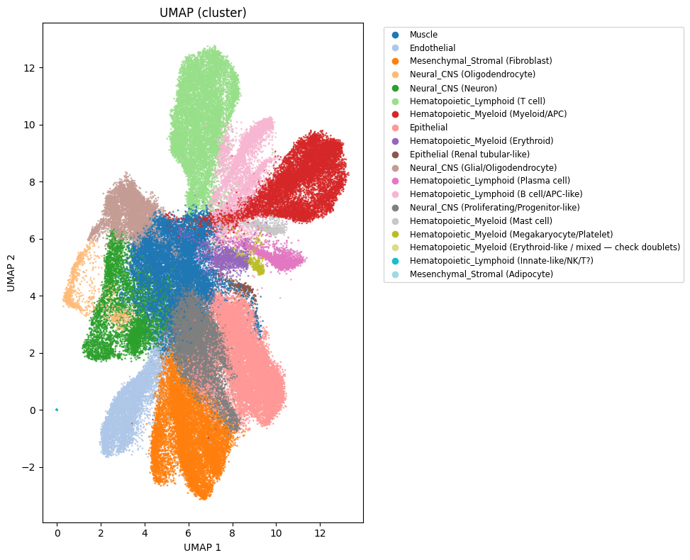
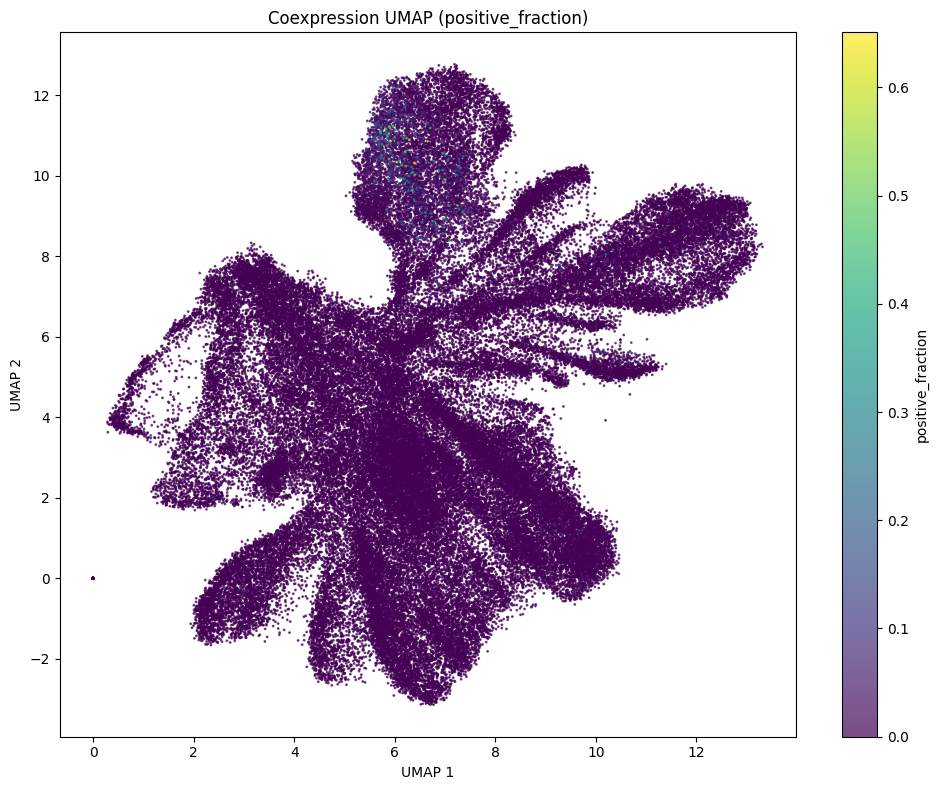
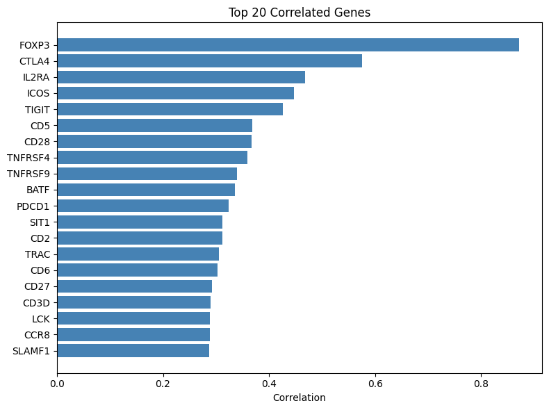
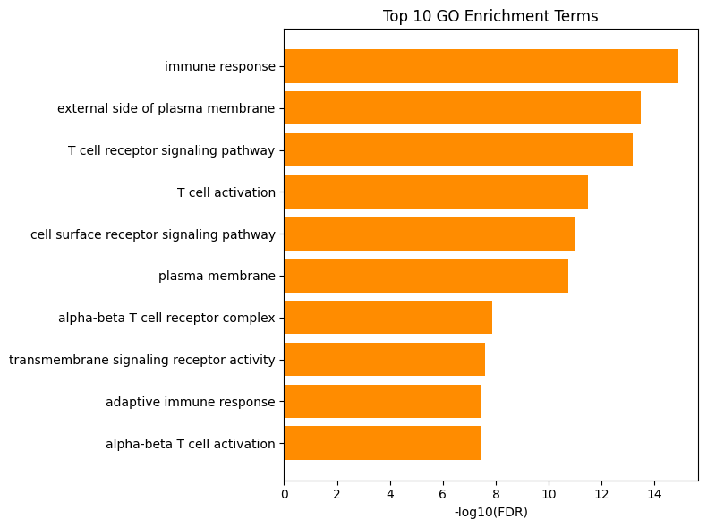

Server-Side Coexpression Analysis¶
This notebook demonstrates how to use the Malva coexpression API to identify correlated genes, visualise metacell UMAP projections, and explore GO enrichment — all computed server-side without needing scanpy locally.
1. Setup¶
Connect to the Malva API. If you have configured your token via malva_client config, no arguments are needed.
[ ]:
API_TOKEN = "" # place your API token here
[2]:
from malva_client import MalvaClient
client = MalvaClient("https://malva.mdc-berlin.de", API_TOKEN)
INFO:malva_client.client:Connected to Malva API: operational
INFO:malva_client.client:Authenticated successfully: free account
2. Load UMAP Coordinates¶
Fetch the base UMAP embedding for a dataset. Replace "DATASET_ID" with a dataset from the hierarchy above.
[3]:
DATASET_ID = "Human_Cell_Atlas"
umap = client.get_umap_coordinates(DATASET_ID)
umap.to_dataframe().head()
[3]:
| x | y | metacell_id | n_cells | sample | cluster | |
|---|---|---|---|---|---|---|
| 0 | 5.019366 | 5.303446 | 0 | 4 | 00238629-699e-404e-b59c-3cc998977dab | Muscle |
| 1 | 4.458183 | 4.992155 | 1 | 3 | 00238629-699e-404e-b59c-3cc998977dab | Muscle |
| 2 | 4.259455 | 6.150664 | 2 | 2 | 00238629-699e-404e-b59c-3cc998977dab | Muscle |
| 3 | 3.423040 | 0.688364 | 3 | 56 | 00aa6c53-71b5-4c12-98c4-54eb8173ffa5 | Endothelial |
| 4 | 4.574430 | 0.048661 | 4 | 42 | 00aa6c53-71b5-4c12-98c4-54eb8173ffa5 | Mesenchymal_Stromal (Fibroblast) |
[4]:
umap.plot(color_by='cluster')
[4]:


3. Search for a Gene¶
Run a standard gene search and inspect the result.
[5]:
result = client.search("FOXP3")
print(result)
INFO:malva_client.client:Search submitted: job_id=bce55537-98fc-4058-ac1f-eb8c2c359601, status=pending
INFO:malva_client.client:search status: pending
INFO:malva_client.client:search status: completed
INFO:malva_client.client:search completed: bce55537-98fc-4058-ac1f-eb8c2c359601
INFO:malva_client.models:Fetching results for job bce55537-98fc-4058-ac1f-eb8c2c359601 ...
INFO:malva_client.models:Results parsed in 0.3s: 1 genes
🔬 Malva Search Results
==================================================
📊 Total cells: 60,738
📊 Sample/cell_type combinations: 13772
🧬 Genes/sequences: 1
🧪 Samples: 4584
🔬 Cell types: 284
📈 Expression range: 0.001 - 13.017
📊 Mean expression: 0.397
ℹ️ Basic expression data only
💡 Run .enrich_with_metadata() to add sample metadata for filtering by:
• Organ, disease, species
• Study, laboratory, protocol
• Age, sex, development stage
🔍 Available methods:
• .filter_by(organ='brain', disease='normal')
• .aggregate_by('cell_type')
• .plot_expression_by('organ')
• .available_filter_fields()
4. Run Coexpression Analysis¶
Pass the search job ID and dataset to the coexpression API. This returns correlated genes, UMAP scores, GO enrichment, cell-type enrichment, and tissue breakdown — all computed on the server.
[6]:
coexpr = client.get_coexpression(result.job_id, DATASET_ID)
print(coexpr)
INFO:malva_client.client:Coexpression task 43343074-6a28-40c8-afca-7046b9b853d2 status: pending
INFO:malva_client.client:Coexpression task 43343074-6a28-40c8-afca-7046b9b853d2 status: running
INFO:malva_client.client:Coexpression task 43343074-6a28-40c8-afca-7046b9b853d2 status: running
CoexpressionResult(dataset='Human_Cell_Atlas', genes=100, query_cells=87749, metacells=13508, go_terms=141)
5. UMAP with Expression Scores¶
Colour the UMAP by the fraction of cells expressing the queried gene.
[7]:
coexpr.plot_umap(color_by='positive_fraction')
[7]:


6. Correlated Genes¶
Inspect the most strongly correlated genes.
[8]:
genes_df = coexpr.genes_to_dataframe()
genes_df.head(20)
[8]:
| co_depletion | co_occurrence | conditional_prob | correlation | gene | jaccard | p_value | |
|---|---|---|---|---|---|---|---|
| 0 | 0.839909 | 0.109094 | 0.952102 | 0.871103 | FOXP3 | 0.681450 | 0.0 |
| 1 | 0.763074 | 0.067597 | 0.589947 | 0.575930 | CTLA4 | 0.285310 | 0.0 |
| 2 | 0.742139 | 0.066444 | 0.579879 | 0.467319 | IL2RA | 0.257673 | 0.0 |
| 3 | 0.748280 | 0.070507 | 0.615339 | 0.447486 | ICOS | 0.280101 | 0.0 |
| 4 | 0.762497 | 0.067165 | 0.586171 | 0.426439 | TIGIT | 0.282796 | 0.0 |
| 5 | 0.727031 | 0.074384 | 0.649171 | 0.367846 | CD5 | 0.272498 | 0.0 |
| 6 | 0.721526 | 0.072865 | 0.635919 | 0.366559 | CD28 | 0.261659 | 0.0 |
| 7 | 0.572759 | 0.088117 | 0.769026 | 0.358934 | TNFRSF4 | 0.206246 | 0.0 |
| 8 | 0.731264 | 0.060311 | 0.526355 | 0.340039 | TNFRSF9 | 0.224425 | 0.0 |
| 9 | 0.575491 | 0.085547 | 0.746595 | 0.335261 | BATF | 0.201519 | 0.0 |
| 10 | 0.756881 | 0.066054 | 0.576473 | 0.324177 | PDCD1 | 0.271693 | 0.0 |
| 11 | 0.694399 | 0.076852 | 0.670714 | 0.312653 | SIT1 | 0.251478 | 0.0 |
| 12 | 0.611406 | 0.083290 | 0.726903 | 0.312467 | CD2 | 0.214337 | 0.0 |
| 13 | 0.491182 | 0.101188 | 0.883106 | 0.306086 | TRAC | 0.198870 | 0.0 |
| 14 | 0.628099 | 0.087582 | 0.764362 | 0.302596 | CD6 | 0.235499 | 0.0 |
| 15 | 0.607614 | 0.093266 | 0.813962 | 0.292574 | CD27 | 0.237689 | 0.0 |
| 16 | 0.612890 | 0.084300 | 0.735712 | 0.290312 | CD3D | 0.217767 | 0.0 |
| 17 | 0.641816 | 0.083409 | 0.727939 | 0.288134 | LCK | 0.232866 | 0.0 |
| 18 | 0.881923 | 0.009831 | 0.085801 | 0.288029 | CCR8 | 0.083261 | 0.0 |
| 19 | 0.694238 | 0.074536 | 0.650503 | 0.286612 | SLAMF1 | 0.243772 | 0.0 |
[17]:
coexpr.plot_top_genes(n=20)
[17]:


7. GO Enrichment¶
Explore Gene Ontology enrichment for the correlated gene set.
[18]:
go_df = coexpr.go_to_dataframe()
go_df.head(10)
[18]:
| fdr | genes | go_id | n_genes_in_term | name | namespace | p_value | query_genes_in_term | |
|---|---|---|---|---|---|---|---|---|
| 0 | 1.258759e-15 | [CCR4, CCR5, CCR6, CCR7, CCR8, CD2, CD7, CD96,... | GO:0006955 | 206 | immune response | biological_process | 4.325631e-18 | 29 |
| 1 | 3.266497e-14 | [CCR4, CCR5, CCR6, CCR7, CCR8, CD2, CD27, CD28... | GO:0009897 | 182 | external side of plasma membrane | cellular_component | 2.245015e-16 | 26 |
| 2 | 6.759542e-14 | [CD247, CD28, CD3D, CD3E, CD3G, CTLA4, FYB1, F... | GO:0050852 | 52 | T cell receptor signaling pathway | biological_process | 6.968600e-16 | 16 |
| 3 | 3.161380e-12 | [CASP8, CD2, CD27, CD28, CD3E, CD3G, CD7, CD70... | GO:0042110 | 45 | T cell activation | biological_process | 4.345539e-14 | 14 |
| 4 | 1.072697e-11 | [BIRC3, CCR5, CD2, CD247, CD27, CD28, CD3D, CD... | GO:0007166 | 128 | cell surface receptor signaling pathway | biological_process | 1.843121e-13 | 20 |
| 5 | 1.877205e-11 | [BIRC3, BTLA, CCR4, CCR5, CCR6, CCR7, CCR8, CD... | GO:0005886 | 1643 | plasma membrane | cellular_component | 3.870525e-13 | 67 |
| 6 | 1.321559e-08 | [CD247, CD3D, CD3E, CD3G, TRAC, TRBC2] | GO:0042105 | 7 | alpha-beta T cell receptor complex | cellular_component | 3.179008e-10 | 6 |
| 7 | 2.634120e-08 | [CD247, CD27, CD28, CD3D, CD3E, CD3G, CD69, CD... | GO:0004888 | 87 | transmembrane signaling receptor activity | molecular_function | 7.241568e-10 | 14 |
| 8 | 3.899310e-08 | [CD247, CD3D, CD3E, CD3G, GPR183, ITK, RTKN2, ... | GO:0002250 | 49 | adaptive immune response | biological_process | 1.339969e-09 | 11 |
| 9 | 3.899310e-08 | [CD247, CD3D, CD3E, CD3G, TRAC, TRBC2] | GO:0046631 | 8 | alpha-beta T cell activation | biological_process | 1.251689e-09 | 6 |
[19]:
coexpr.plot_go_enrichment(n=10)
[19]:


8. Cell Type & Tissue Breakdown¶
See which cell types and tissues are enriched for the query.
[20]:
coexpr.cell_type_enrichment_to_dataframe()
[20]:
| cell_type | enrichment_score | mean_positive_fraction | n_positive_metacells | p_value | total_metacells | |
|---|---|---|---|---|---|---|
| 0 | Hematopoietic_Lymphoid (T cell) | 2.0439 | 0.024896 | 4670 | 0.000000e+00 | 9884 |
| 1 | Hematopoietic_Lymphoid (B cell/APC-like) | 0.6147 | 0.009218 | 812 | 7.319431e-36 | 4628 |
| 2 | Hematopoietic_Myeloid (Myeloid/APC) | 0.4236 | 0.008379 | 1496 | 3.321561e-34 | 9734 |
| 3 | Neural_CNS (Proliferating/Progenitor-like) | 0.3176 | 0.003579 | 1484 | 2.350244e-20 | 10392 |
| 4 | Epithelial | 0.1755 | 0.007426 | 1650 | 2.313736e-08 | 12751 |
| 5 | Hematopoietic_Lymphoid (Plasma cell) | 0.1550 | 0.015933 | 204 | 5.605361e-02 | 1599 |
| 6 | Neural_CNS (Neuron) | 0.0690 | 0.004103 | 613 | 1.036053e-01 | 5100 |
| 7 | Hematopoietic_Myeloid (Erythroid) | -0.5098 | 0.005015 | 115 | 9.999918e-01 | 1429 |
| 8 | Mesenchymal_Stromal (Fibroblast) | -0.1863 | 0.004996 | 1116 | 9.999995e-01 | 11082 |
| 9 | Epithelial (Renal tubular-like) | -2.1224 | 0.002515 | 6 | 9.999998e-01 | 228 |
| 10 | Hematopoietic_Myeloid (Mast cell) | -1.4318 | 0.021341 | 22 | 1.000000e+00 | 518 |
| 11 | Hematopoietic_Myeloid (Megakaryocyte/Platelet) | -2.2359 | 0.017603 | 9 | 1.000000e+00 | 370 |
| 12 | Neural_CNS (Oligodendrocyte) | -1.0598 | 0.013222 | 57 | 1.000000e+00 | 1037 |
| 13 | Endothelial | -1.4369 | 0.009043 | 202 | 1.000000e+00 | 4773 |
| 14 | Hematopoietic_Lymphoid (Innate-like/NK/T?) | -8.3436 | 0.007812 | 7 | 1.000000e+00 | 19845 |
| 15 | Hematopoietic_Myeloid (Erythroid-like / mixed ... | -6.1295 | 0.004386 | 1 | 1.000000e+00 | 611 |
| 16 | Mesenchymal_Stromal (Adipocyte) | -10.0000 | 0.000000 | 0 | 1.000000e+00 | 96 |
| 17 | Muscle | -0.6178 | 0.005790 | 808 | 1.000000e+00 | 10821 |
| 18 | Neural_CNS (Glial/Oligodendrocyte) | -2.6570 | 0.001221 | 236 | 1.000000e+00 | 12991 |
[21]:
coexpr.tissue_breakdown_to_dataframe()
[21]:
| mean_positive_fraction | n_positive_metacells | tissue | total_metacells | |
|---|---|---|---|---|
| 0 | 0.003054 | 1559 | Single-cellRNA-seqrevealscelltype-specificmole... | 3273 |
| 1 | 0.006071 | 1083 | Aspatiallyresolvedsingle-cellgenomicatlasofthe... | 8987 |
| 2 | 0.006666 | 945 | HematopoieticImmuneCellAtlas | 3439 |
| 3 | 0.002053 | 722 | DopaminergicNeuronDifferentiation | 6235 |
| 4 | 0.002387 | 423 | earlyHumanEmbryogenesisAtlas | 2926 |
| ... | ... | ... | ... | ... |
| 222 | 0.000000 | 0 | humanDentalPulpCells | 10 |
| 223 | 0.000000 | 0 | humanUrineCells | 13 |
| 224 | 0.000000 | 0 | landscapesOfHumanOvarianAgeing | 3 |
| 225 | 0.000000 | 0 | nktpbmcZhou | 51 |
| 226 | 0.000000 | 0 | photoreceptorMacularSubregions | 129 |
227 rows × 4 columns